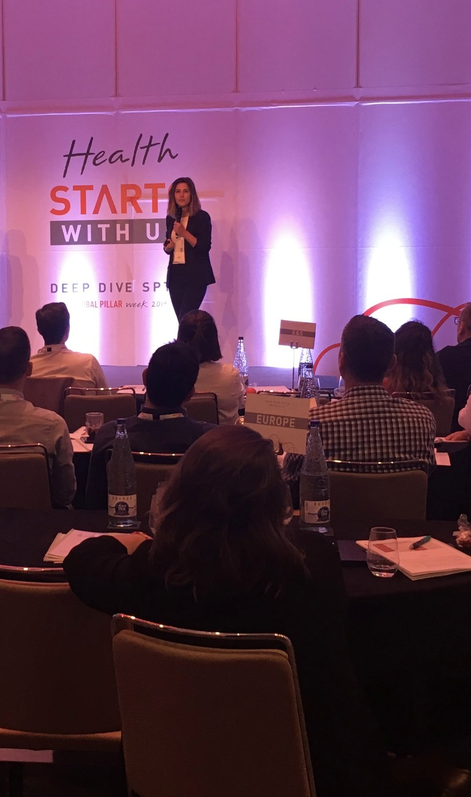
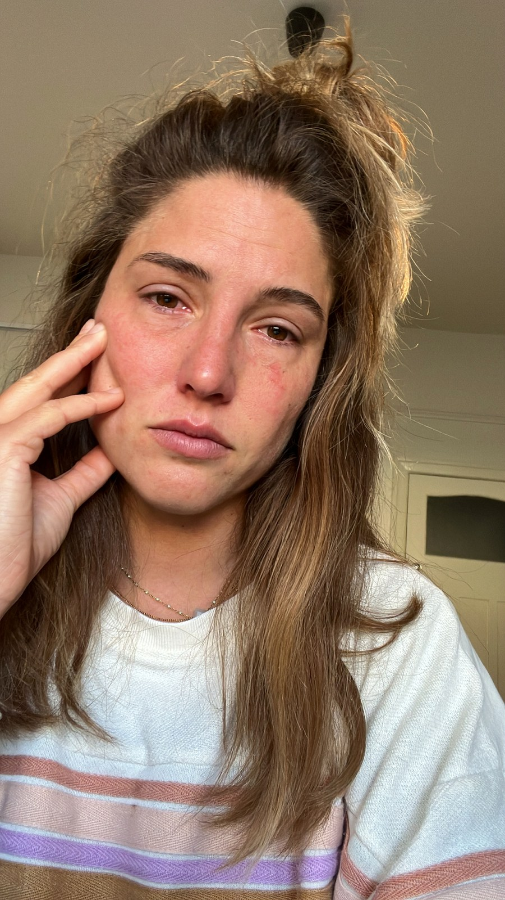
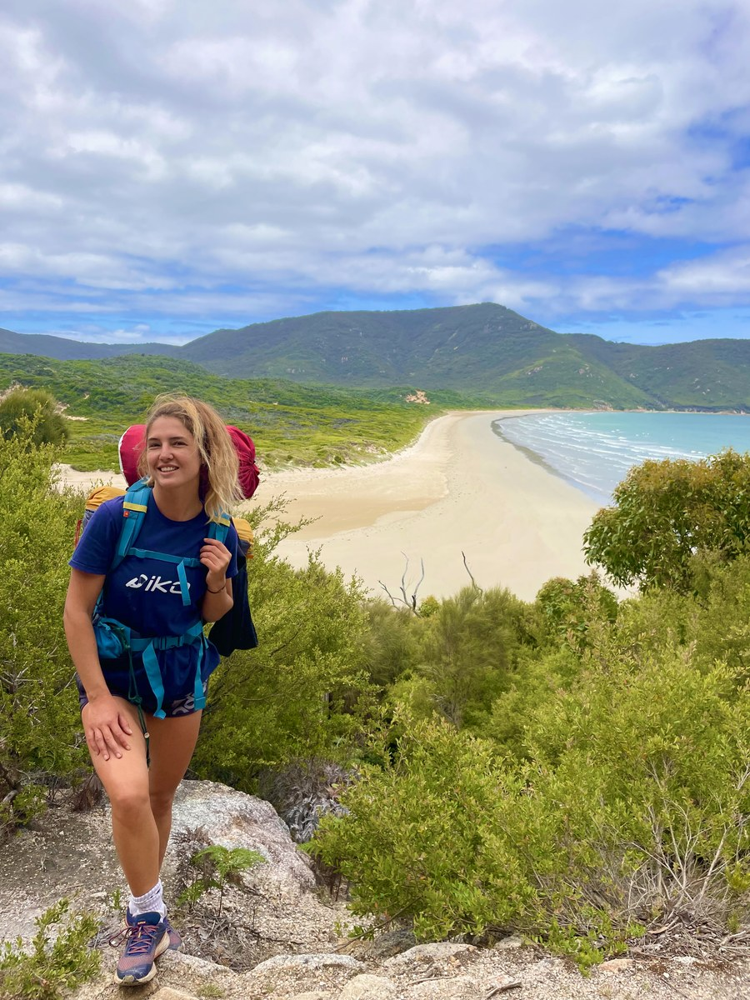
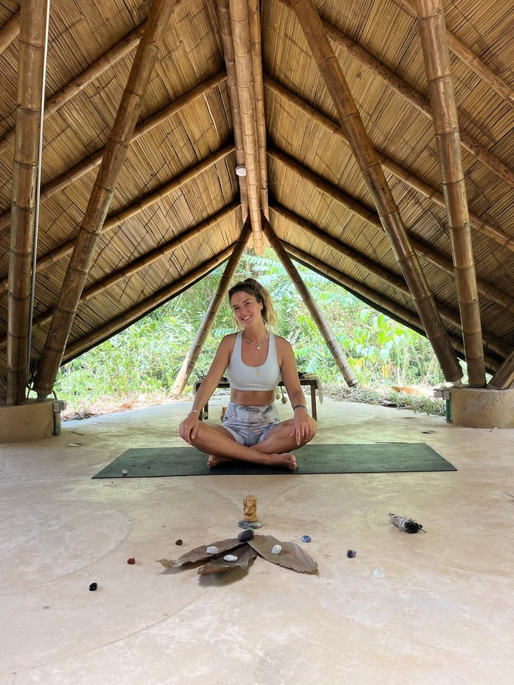
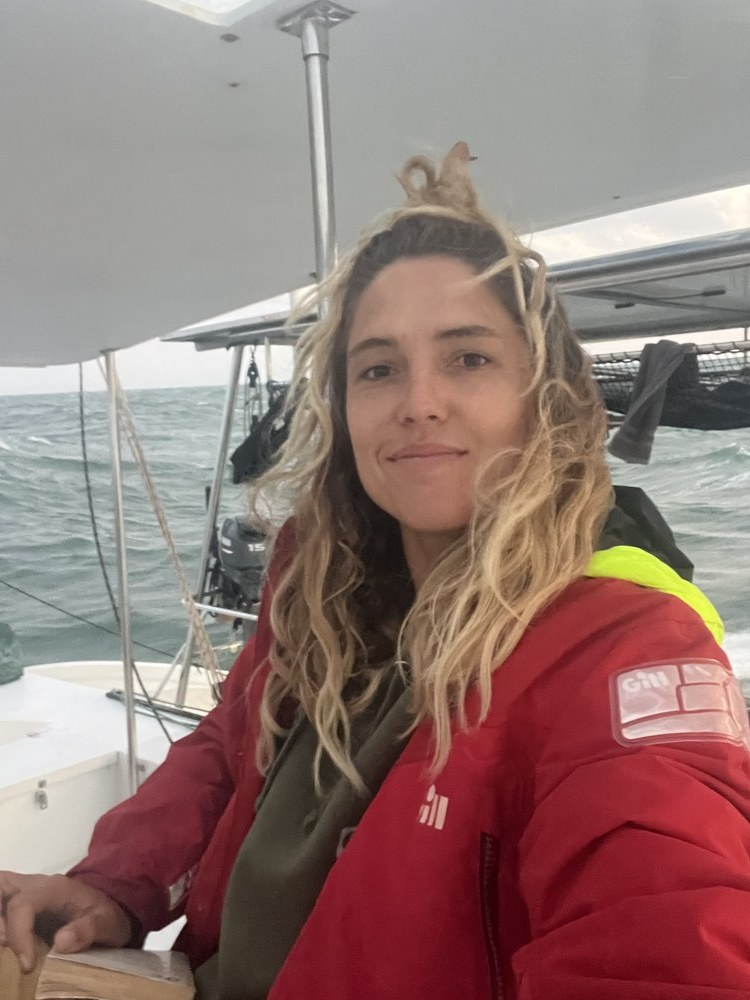
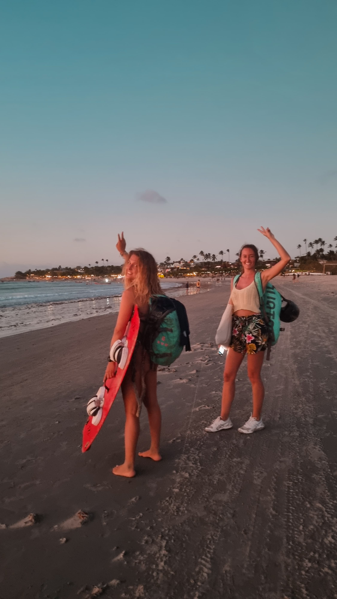
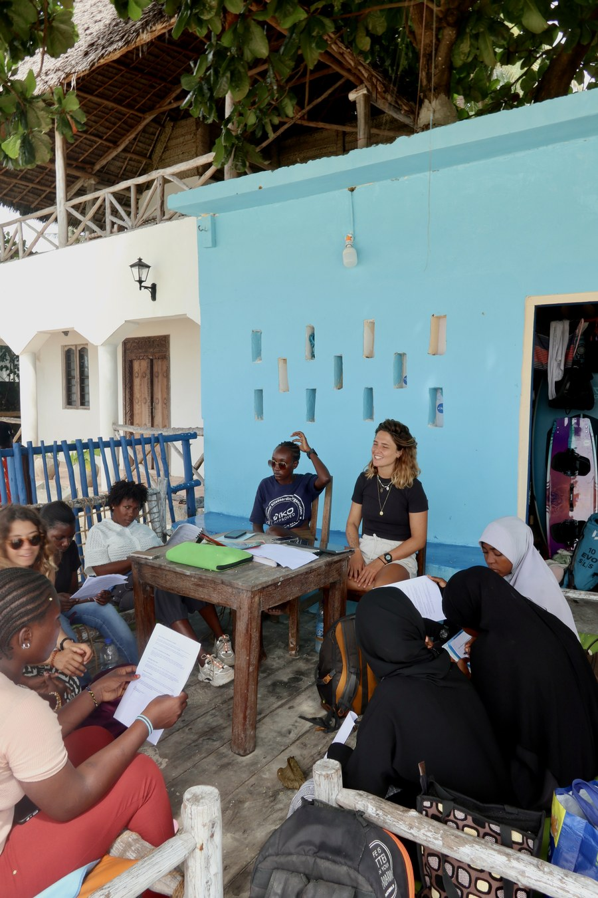
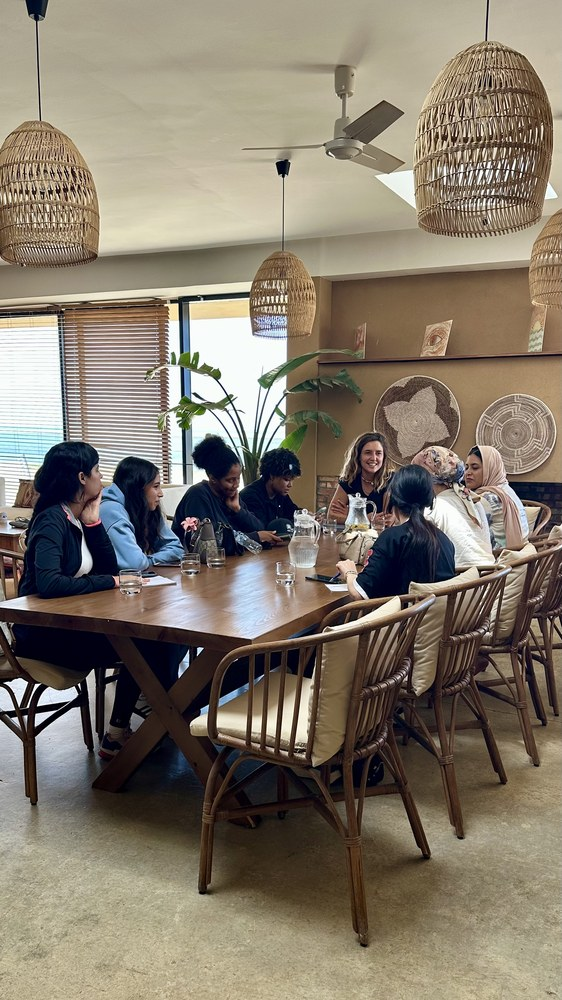
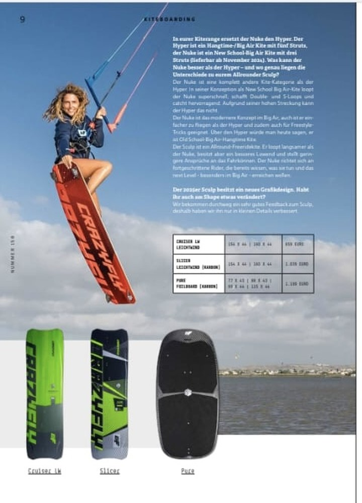

J'ai créé Changer-de-vie.fr car j'ai moi-même vécu le flou et la souffrance intérieure, incomprise, d'une transition non accompagnée. Je ne souhaite à personne de faire ce voyage seul — car bien entouré, définir un nouveau tournant peut être une aventure plaisante et joyeuse.

Toutes les cases cochées —
et pourtant.
En 2018, j'obtiens mon diplôme d'ingénieur dans le top 10 de ma promotion. Je rejoins une multinationale, évolue en France et en expatriation, décroche mon CDI, achète mon appartement, enchaîne les promotions — classée dans le 1% des employés les plus performants.
Pourtant, malgré tous ces changements de postes, de pays, de salaire, une souffrance intérieure était toujours présente. Je performais. Mais je n'étais pas heureuse — parce que rationnellement, j'avais coché toutes les cases.

L'incompréhension.
La culpabilité. L'implosion.
Cette incompréhension, mêlée à de la culpabilité, créait un mélange explosif d'émotions. Pour trouver une explication rationnelle, je cherchais les responsables : les managers, les processus, le modèle économique…
Autour de moi, personne ne comprenait ce que je ressentais. Pas d'accompagnement. Alors, j'ai fini par imploser.
J'ai élaboré mon plan de sortie, ma stratégie financière, puis j'ai démissionné — avec la décision de repartir d'une feuille blanche. Une intuition renforcée par un plan rationnel.
— Mon mail d'au revoir à la multinationale
Je comprendrais plus tard que c'était ça — définir une vision. Et que c'était une étape essentielle du changement.
L'année sabbatique —
suivre uniquement son intuition.

Australie, année sabbatique — apprendre à avancer sans plan défini.
J'ai voyagé en suivant mon intuition et ce qui me plaisait. Je me suis éduquée sur les émotions, la quête de sens, le fonctionnement de l'humain. J'ai découvert et expérimenté la méditation, la sophrologie, le yoga — des outils qui m'ont aidée à gérer mes émotions, mes peurs et gagner énormément en clarté mentale.
Sur mon chemin, j'ai été inspirée par de nombreuses personnes, histoires de vie, points de vue, cultures, expériences et œuvres littéraires. J'ai exploré et testé différents projets entrepreneuriaux — séjours kite, coaching en sports extrêmes pour public féminin… J'ai même fait la une d'un magazine de kitesurf dans ces péripéties !
J'étais devenue l'entrepreneuse que j'avais visualisée. J'étais heureuse ET performante. Ma vie professionnelle était devenue fluide, plaisante et devenait financièrement stable grâce à des activités professionnelles totalement alignées à qui j'étais et mes valeurs !



Rise with the Wind —
la vision qui se réalise.
Puis j'ai rencontré un mécène avec qui j'ai coconstruit Rise with the Wind : un programme de formation pour femmes de milieu désavantagé pour devenir instructrices de kitesurf, dans des pays en développement.
Depuis, je parcours régulièrement le monde pour mentorer et coacher des femmes sans CV — les aider à s'autodéterminer, grandir, atteindre leurs visions, développer leurs micro-entreprises.




ChangerDeVie —
et maintenant, aider les autres.
Mes proches ont commencé à me demander conseil. Mais je ne me sentais pas équipée — ce qui avait marché pour moi n'allait pas forcément fonctionner pour d'autres. C'est ainsi que je me suis formée au Bilan de Compétences.
ChangerDeVie est né de ma passion pour aider d'autres personnes à sortir de ce flou, de ce brouillard mental, de ce mal-être incompris. En trouvant les outils et les experts qui conviennent vraiment à leur personnalité et au moment dans lequel ils se trouvent.
C'est la conviction qu'une personne qui a besoin de changement sera mieux accompagnée par une communauté d'experts qu'une seule personne ou des experts travaillant en silo.
Vous avez envie d'en savoir
un peu plus ?
Un appel de 30 minutes, sans agenda. Vous partagez où vous en êtes — et on voit ensemble ce qui pourrait vous aider.